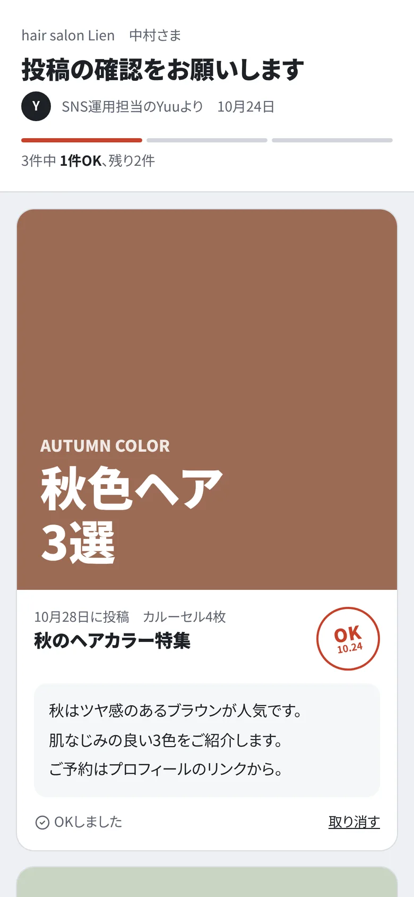
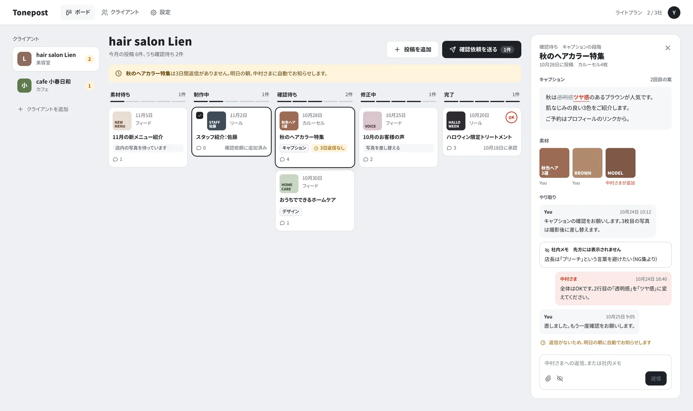
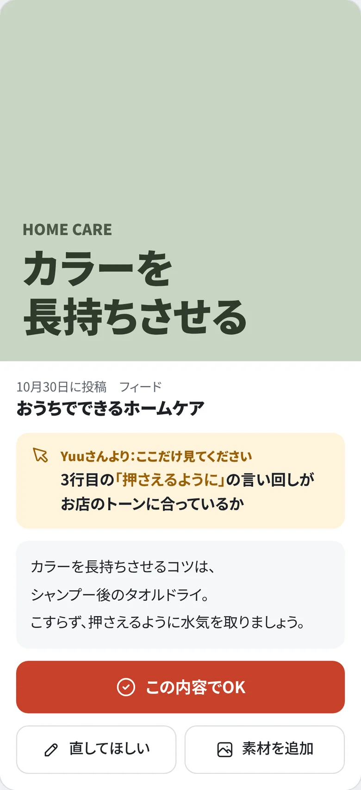

確認はチャット、進み具合はスプレッドシート
連絡と管理が別の場所にあって、どの投稿がOKでどれが修正中か、毎回見比べることになる。
SNS運用代行者さん向け
投稿の確認・修正・素材のやり取りを、投稿ごとに1か所へ。クライアントさんはスマホでリンクを開いて、OKか「直してほしい」を返すだけです。

運用代行者さん10人以上に聞いてわかったこと
確認はチャット、進み具合はスプレッドシート
連絡と管理が別の場所にあって、どの投稿がOKでどれが修正中か、毎回見比べることになる。
まとめて送ると、半分くらい流し読みで返ってくる
どこを見てほしいかを1〜2個に絞って伝えると、返ってくる精度が上がる。
結局、いかにすぐチェックしてもらえるか
返事が来るまで次に進めない。間に合わないときは打合せの場で一緒に確認している。
使い方
投稿を登録して、確認してほしいものを選んで送るだけ。クライアントさんには確認用のリンクが届きます。
アプリもログインも不要。投稿ごとに「OK」か「直してほしい」を押して、素材もその場で追加できます。
素材待ち・制作中・確認待ち・修正中・完了。何社担当していても、止まっている投稿がすぐわかります。

代行者さんの画面（PC）。クライアントごとに、投稿の進み具合が並びます。

流し読みを防ぐ
確認してほしいポイントが、クライアントさんの画面のいちばん上に出ます。全部を読まなくても、見るべき場所がすぐわかります。
料金
正式版は、担当しているクライアントの数に合わせて選べる予定です。
11社以上は、5社ごとに月1,980円で追加できます（例：15社まで6,960円、20社まで8,940円）。
正式版の料金は予定です。β版に参加いただいた方には、正式版の開始前にご案内します。
β版の利用者を募集しています
まだ開発中です。実際の進め方を聞かせていただき、「この機能がほしい」という声を優先して作ります。購入や契約のお願いはしません。
よくある質問
いいえ。クライアントさんは届いたリンクを開くだけで確認できます。過去の投稿をまとめて見たいときだけ、メールアドレスでログインできます（パスワードは不要です）。
いいえ。投稿を作るのは代行者さんです。このツールは、作った投稿の確認と修正のやり取りをまとめるためのものです。
できません。SNSのアカウントとはつながず、確認の流れだけに絞っています。
アプリはありません。代行者さんはPCのブラウザ、クライアントさんはスマホのブラウザで使えます。